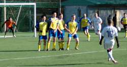
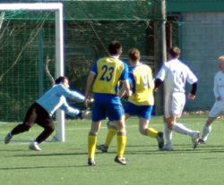
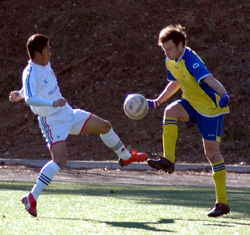
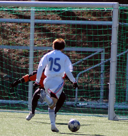
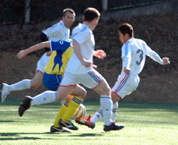

|
Daito Bunka Uni, Sunday 27th Jan,
Even missing six or seven regular players, BFC breezed to a 5-1 win over the Geckoes to retake top spot in TML One, albeit having played a game more than Hibs.
Captain Jon Day struck twice and Yamagishi, Morson and Evans chipped in with superb goals in a one-sided game.
BFC were due a few goals and with a pre-match e-mail from former goalkeeper Jyrki demanding victory, it seemed rude not to, well, score a few. Their first here came with barely a minute gone, Yamagishi skipping through to finish in style, waiting for the goalkeeper to go to ground before scooping the ball, Torres-like, inside the far post.

It took less than five minutes for BFC to double their lead, Garry Robertson's curling free kick coming back off the bar and Day pouncing, like the tiger he is, to nod the ball into the empty net. Not even bothering to stub out his Marlboro Light.
Midway through the half, and apologies if this sounds like a shopping list, it was 3-0 courtesy of a truly fantastic goal from Evans, who wriggled free from his marker before beating two defenders and smashing the ball into the top corner.
And lo' BFC's lead ballooned to four when Morson went on one of his mad charges down the right and, ignoring calls from team mates forming a queue in the box, appeared to have run the ball out of play. Not so.

Clearly caught in two minds between going for power or precision, he thought 'Tits, I'll go for both!' and thundered a shot from an impossible angle across the goalkeeper and in off the post. You had to be there! It was ridiculous.
Orlando was called into action once, brilliantly tipping over a fierce long-range drive after some batty defensive play from BFC, who were otherwise solidly marshalled by Morson, Doyle, Lowes and Gen. Aside from the last few minutes before halftime, BFC played as if they hardly missed Carlos Aranda, Rouven Woszlido, Taka, Shawn Tee etc.
Perhaps one of the most gratifying aspects for BFC, even more so than breaking a frustrating run of draws (well, maybe not as gratifying as that!) was having Pablo Pomares return with a bang, snapping into tackles like the Pabs of old. Quality. 'Innit!'

BFC began the second half in the same vein as the first, going 5-0 up, albeit via Route One, Orlando's huge kick headed on by Himmer for Day, who coolly took the ball round the keeper to score his second of the day.
In truth it could have turned into a rugby score, Himmer heading narrowly wide and then guilty of a horror miss late on, while Yamagishi almost scored with a carbon copy of his opener.
BFC charitably allowed a late consolation goal when Orlando threw the ball to Kazu, who smashed it back into the goal from 25 metres, but it hardly mattered. Job done.
Hibs dropping points against the British Embassy the previous day had opened the door for BFC to return to the top but the title race looks tighter this year with Sala also likely to be in the mixer and the Swiss sure to have a say in the final shake-up.

You still wouldn't want to bet against the men in green. The Hibs have looked solid again all season and are still favourites to dethrone BFC with that game in hand. But, er, a week's a long time in football and ... other cliches I'm too battered to recall. Etc., etc.
Morson's 'Big Day Out' was completed when Robertson, apparently in all seriousness, said he looked like Daniel Craig on the train home. The little fella's grin could have lit up Tokyo!
Report By Pinky and Diane
|